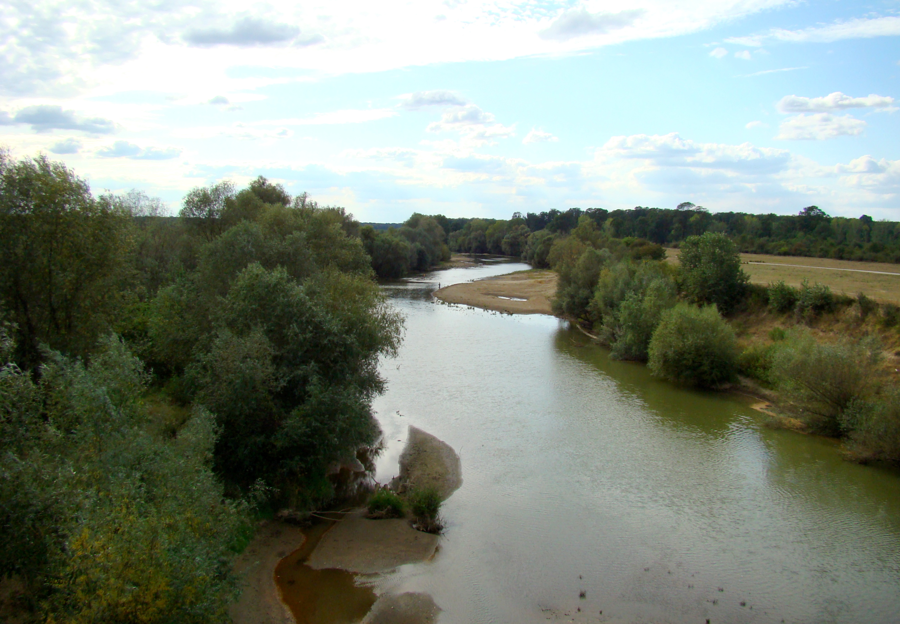

Ribe Tamiša
Upoznaj osobine pojedinih vrsta i razlike između grabljivica i mirnih riba.
O projektu
Ovaj sajt predstavlja neke od slatkovodnih riba Tamiša i približava posetiocima život u reci.
Želeli smo da na jednom mestu predstavimo ribe koje se mogu sresti u Tamišu. Kroz kratke opise, fotografije i multimedijalni sadržaj, posetioci mogu lakše da upoznaju raznovrsnost slatkovodnog sveta.
Sajt je namenjen svima koji vole prirodu i žele da nauče nešto više o ribama i njihovim staništima.
Pogledaj vrste riba
Upoznaj osobine pojedinih vrsta i razlike između grabljivica i mirnih riba.
Otkrij kako različita staništa u reci pružaju uslove za život riba.
Čista voda i očuvana obala važni su za živi svet reke.